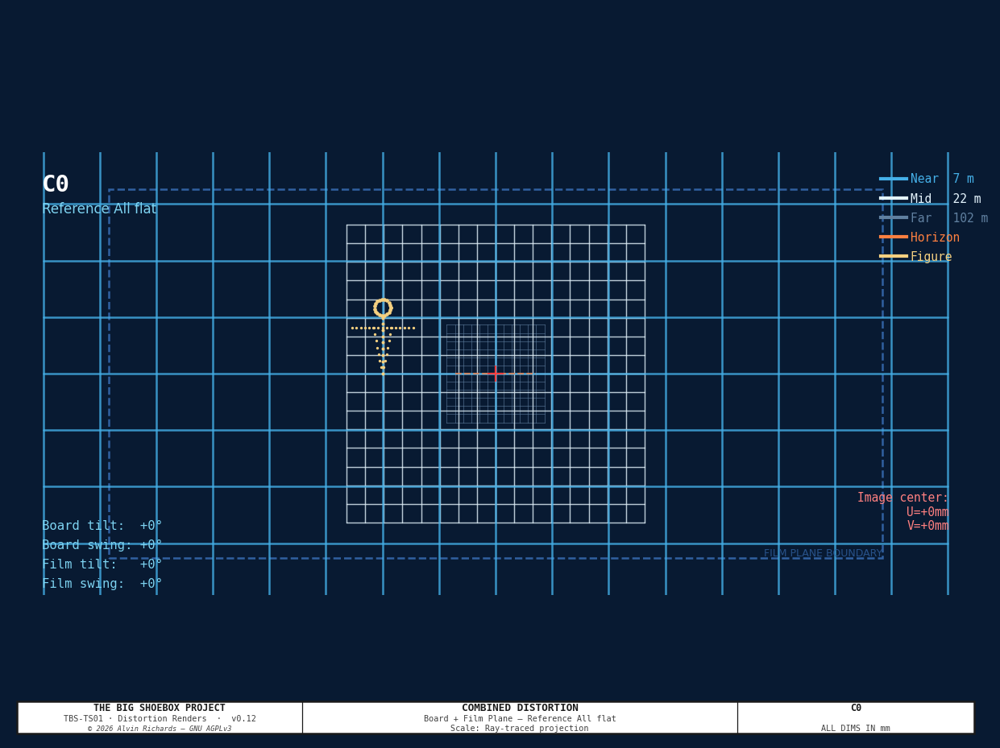
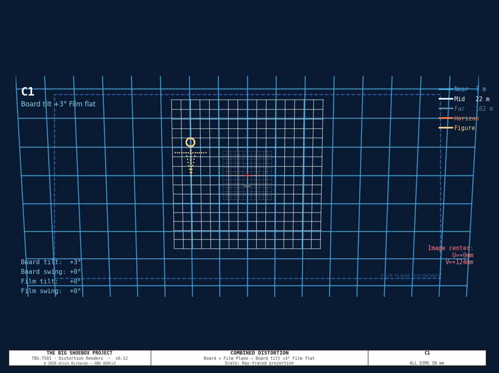
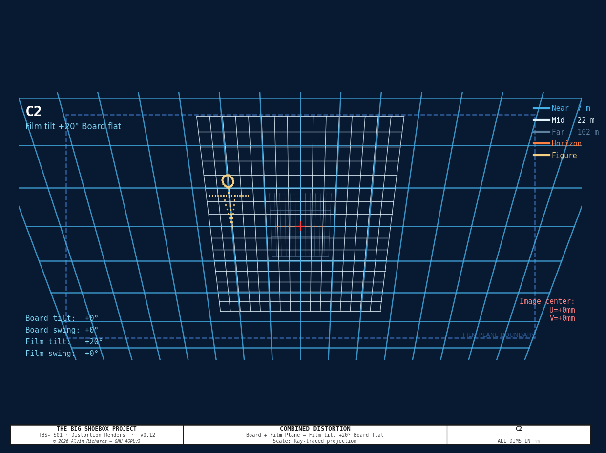
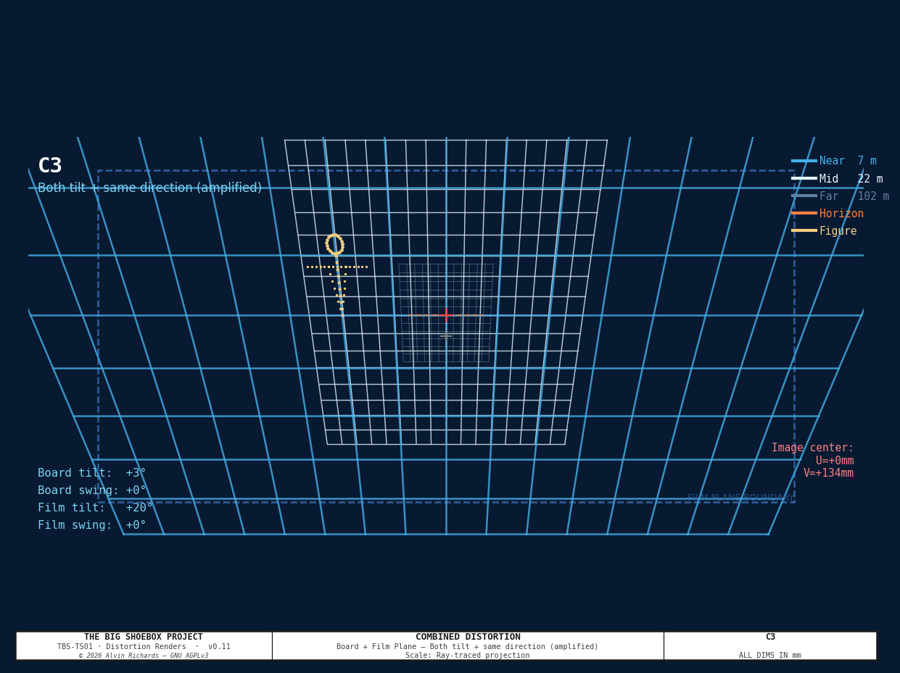
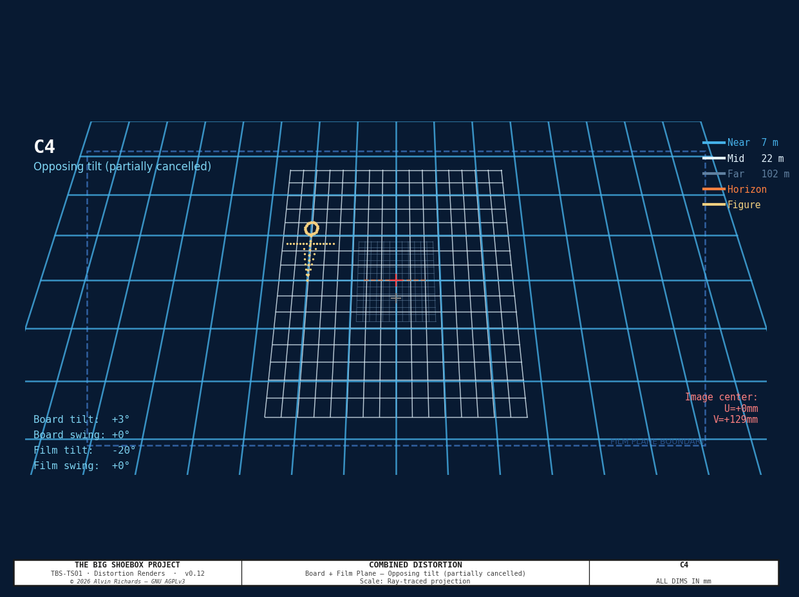
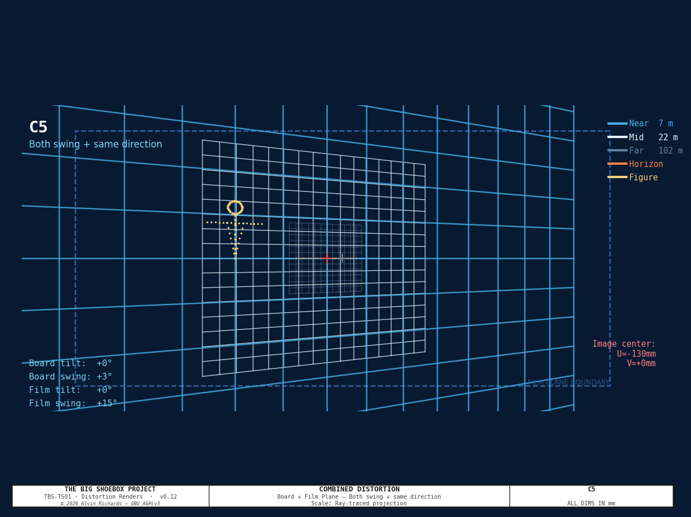
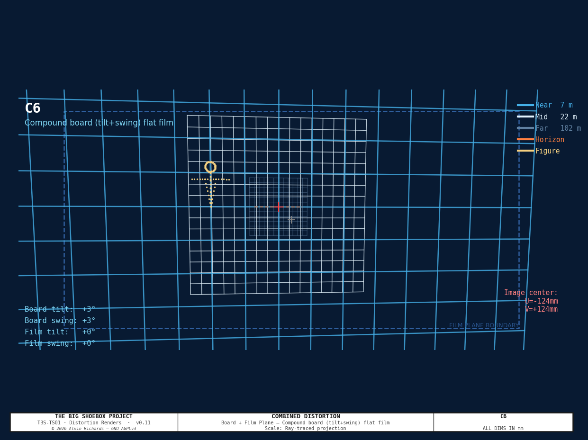
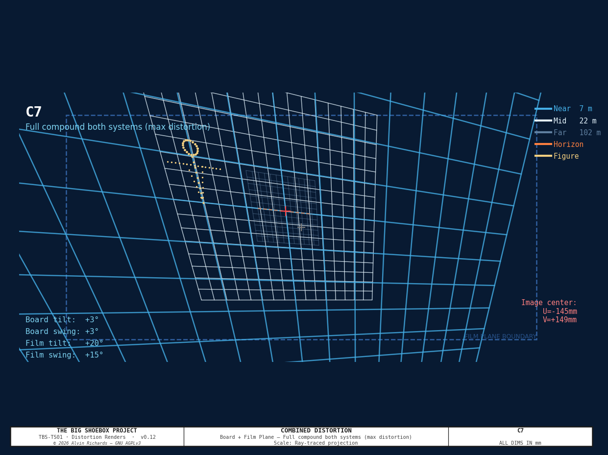
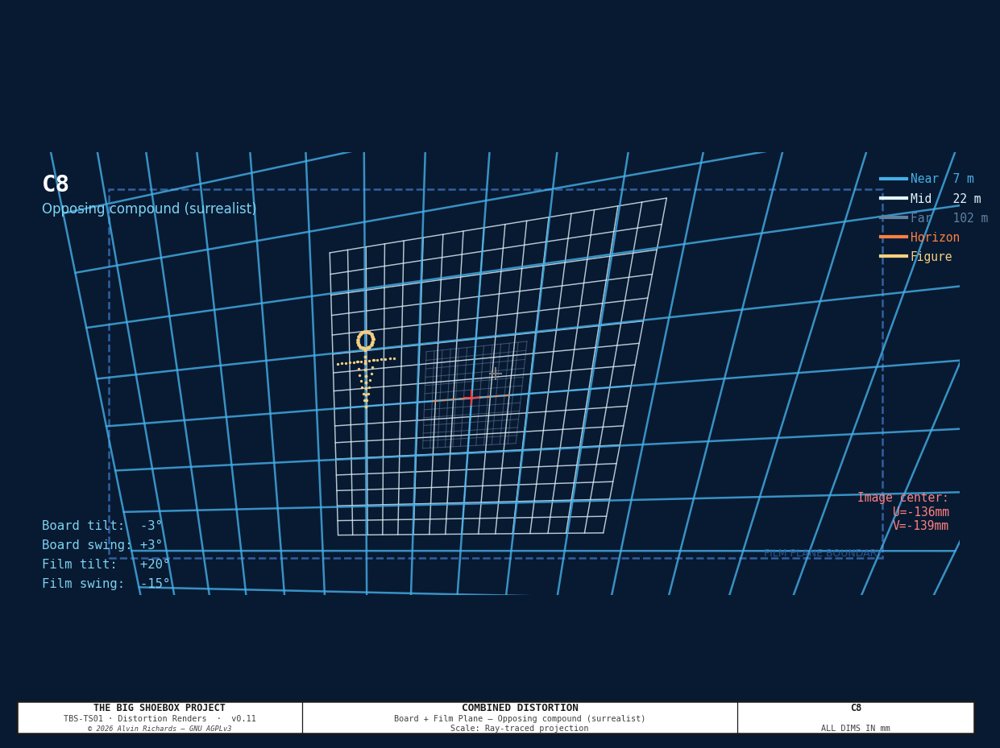

Tilt-and-Swing Front Board Mechanism¶
1. Purpose¶
The front board is the interchangeable plate that carries the pinhole disc at the scene-facing end of the container. This report specifies a new plate — the Tilt-Swing Board (TSB) — that replaces the flat pinhole plate and adds two axes of angular adjustment to the pinhole's pointing direction.
2. Optical Effect: Front-Board vs Film-Plane Movement¶
In a conventional view camera, front-standard movements and rear-standard movements have different optical effects. The Big Shoebox has both: this mechanism controls the front board, and the Film Plane Mechanism controls the rear.
2.1 What front-board tilt/swing does¶
The pinhole is a geometric projector — it has no focal length in the lens sense. Tilting the front board rotates the pinhole's pointing direction. The effect on the recorded image:
| Movement | Effect on image |
|---|---|
| Board tilt up (+α) | Image shifts upward on film (~207mm per 5°) |
| Board swing right (+β) | Image shifts right on film (~207mm per 5°) |
| Compound tilt + swing | Image shifts diagonally; introduces ~1.5% anamorphic keystone at 5° |
At f = 2362mm, a 5° board tilt shifts the image 2,362 × tan(5°) = 207mm on the film plane. On a 2388mm tall film plane this is nearly 9% of the frame height — a very significant compositional tool.
No Scheimpflug effect: because a pinhole has no plane of focus, front-board tilt does not rotate the zone of sharpness. Instead it steers the cone of light projected onto the film.
2.2 Comparison to film-plane movement¶
| Front board tilt | Film plane tilt | |
|---|---|---|
| Image shift | Yes — 207mm per 5° | No (film moves, not image center) |
| Keystone | Gentle (~1.5% at 5°) | Dramatic (Scheimpflug-style) |
| Scale gradient | Uniform across field | Non-uniform (near edge stretched) |
| Focus | Constant (pinhole) | Constant (pinhole) |
| Primary use | Image placement, diagonal shift | Perspective distortion, extreme stretch |
2.3 Combined movements: the interesting case¶
When both systems operate simultaneously, the effects stack non-linearly. The combined projection model (see distortion renders) shows:
- Same-direction tilt (amplified): board tilt + film tilt in the same direction amplifies the image shift and adds Scheimpflug-style keystone on top of the board-shift offset
- Opposing tilt: the two effects partially cancel, producing a near-flat image with a subtle S-curve distortion at the transition zone — invisible with either system alone
- Full compound (both axes, both systems): produces an image where no lines are parallel in any axis — the most complex projection the camera can make
See the Combined Distortion Renders section below.
3. Movement Specification¶
| Axis | Control | Travel | Resolution | Image effect |
|---|---|---|---|---|
| Tilt | Top + bottom M8 screws (black knobs) | ±5.3° | 0.012°/click | ±222mm vertical image shift |
| Swing | Left + right M8 screws (silver knobs) | ±5.3° | 0.012°/click | ±222mm horizontal image shift |
| Compound | All 4 screws | ±3.7° per axis simultaneously | 0.012°/click | Diagonal shift + keystone |
Image shift formula: shift (mm) = f × tan(θ) = 2,362 × tan(θ)
| Board angle | Tilt image shift | Notes |
|---|---|---|
| 1° | 41mm | Very subtle — useful for fine composition |
| 2° | 83mm | ~3.5% of frame height |
| 3° | 124mm | ~5.2% — clearly visible on print |
| 5° | 207mm | ~8.7% — dramatic compositional shift |
| 5.3° (max) | 220mm | Mechanical hard stop |
4. Combined Distortion Renders¶
The following renders show the combined projection of both systems operating simultaneously. The world scene is a regular grid at three depths (near: 7.4m, mid: 22.4m, far: 102.4m from pinhole) plus a human-figure reference and horizon line.
The projection model applies two sequential transformations:
Step 1 — Front board rotation:
Board tilt α and swing β rotate the effective world coordinate system:
W' = Ry(−β) · Rx(−α) · W_world
Step 2 — Film plane intersection:
The tilted film plane (film tilt θ, film swing φ) is defined by anchor point r₀=(0,0,2362) and normal n = Ry(φ)·Rx(θ)·[0,0,−1]. The image point is:
t = (n·r₀)/(n·d); F = t × d
The red cross (+) marks the projected image center; gray cross marks the nominal center.
C0 — Reference (all flat)¶

Undistorted reference. Both systems at 0°. Grid is symmetric, image center on nominal.
C1 — Board tilt +3° only¶

The pinhole points 3° upward. The entire image shifts up ~124mm on the film. Grid lines remain parallel (no keystone from board tilt alone). The effect is equivalent to pointing the camera upward — useful for including more sky or adjusting horizon placement.
C2 — Film tilt +20° only¶

Film plane tilts 20° (top edge moves toward pinhole). The near grid is compressed vertically near the top of frame; the bottom of frame is stretched. Classic Scheimpflug-style distortion without any board movement.
C3 — Board tilt +3° + film tilt +20° (amplified)¶

Both tilt in the same direction. The board shift (+124mm) lands on an already-compressed region of the film plane — the upper image is dramatically compressed AND shifted. The lower frame is expanded. This is the strongest single-axis distortion this camera can produce.
C4 — Board tilt +3° + film tilt −20° (opposing)¶

The board tilts up but the film tilts in the opposite direction. The two effects partially cancel: the image shift is reduced, and the keystone is inverted relative to the shift direction. A nearly flat image results, with a subtle S-curve distortion at the midpoint — invisible with either system alone.
C5 — Board swing +3° + film swing +15° (lateral amplification)¶

Both systems swing right. The image shifts laterally and develops a horizontal keystone. Useful for photographing asymmetric subjects — the camera can be placed centrally in the container but the image framed toward one side.
C6 — Compound board (tilt +3° + swing +3°), flat film¶

The board points diagonally (both up and right simultaneously). The image shifts diagonally on the film plane. The film plane is flat, so no Scheimpflug effect — a clean diagonal translation of the image with minimal keystone.
C7 — Full compound both systems¶

Board: tilt +3°, swing +3°. Film: tilt +20°, swing +15°. The most complex projection this camera can produce. No lines are parallel in any axis. The image center shifts diagonally while independent keystone gradients run in both X and Y. Surrealist in character.
C8 — Opposing compound (surrealist)¶

Board: tilt −3°, swing +3°. Film: tilt +20°, swing −15°. The tilt and swing are opposed in both axes simultaneously. The result is a "folding" distortion — the image appears to rotate in opposite directions about orthogonal axes. No precedent in conventional camera movements. A uniquely novel optical configuration.
Summary grid¶

5. Recommended Starting Configurations¶
For a first shoot with the TSB mechanism, the following settings offer the clearest demonstration of each effect:
| Session | Board tilt | Board swing | Film tilt | Film swing | What to observe |
|---|---|---|---|---|---|
| 1 — Baseline | 0° | 0° | 0° | 0° | Flat reference for comparison |
| 2 — Board only | 2° | 0° | 0° | 0° | Image shifts up 83mm — subtle, elegant |
| 3 — Film only | 0° | 0° | 15° | 0° | Scheimpflug compression at top |
| 4 — Amplified | 2° | 0° | 15° | 0° | Clear stacking effect |
| 5 — Opposing | 2° | 0° | −15° | 0° | Near-cancellation with S-curve residual |
| 6 — Full compound | 3° | 3° | 20° | 15° | Maximum compound — one 90-min exposure |
6. Source References¶
- Film Plane Mechanism Report — Rear standard mechanism and combined distortion analysis.
- Pinhole Report — Wall frame and interchangeable plate interface specification.
© 2026 Alvin Richards — Released under GNU AGPLv3